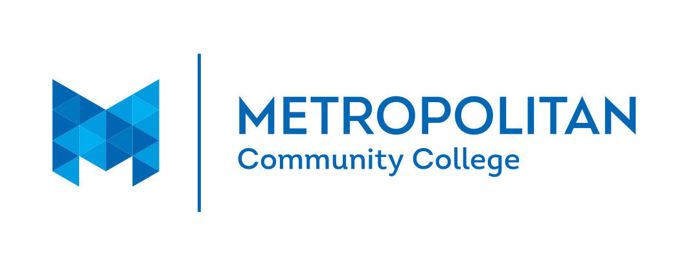

Metropolitan Community College:
I work as an Information Technology intern at Metro Community College. I have gotten the experience working with almost every area of Metro's IT department. I started out working with the help desk then moved to a different department every two weeks. I worked alongside their networking team for a while and am now working with their server analysts. It's been a really beneficial experience for me and has been helping me a lot to give me some real life experiences in my desired field.

Marcus Village Pointe Cinema:
I have been working at the cineam for over 3 years now and I have been moved around to almost every position offered there.
I have worked as a concessions worker, a box office worker, an usher, a shift lead, and now currently a bartender. Bartending has been a good opportunity
for me since it allows me to work on my people skills and meet many different people. This job alough may seem consequential it has helped me a lot and
with the highyl flexible hours i am able to juggle this and my job at Metro to maximize the ezperiences I am getting.